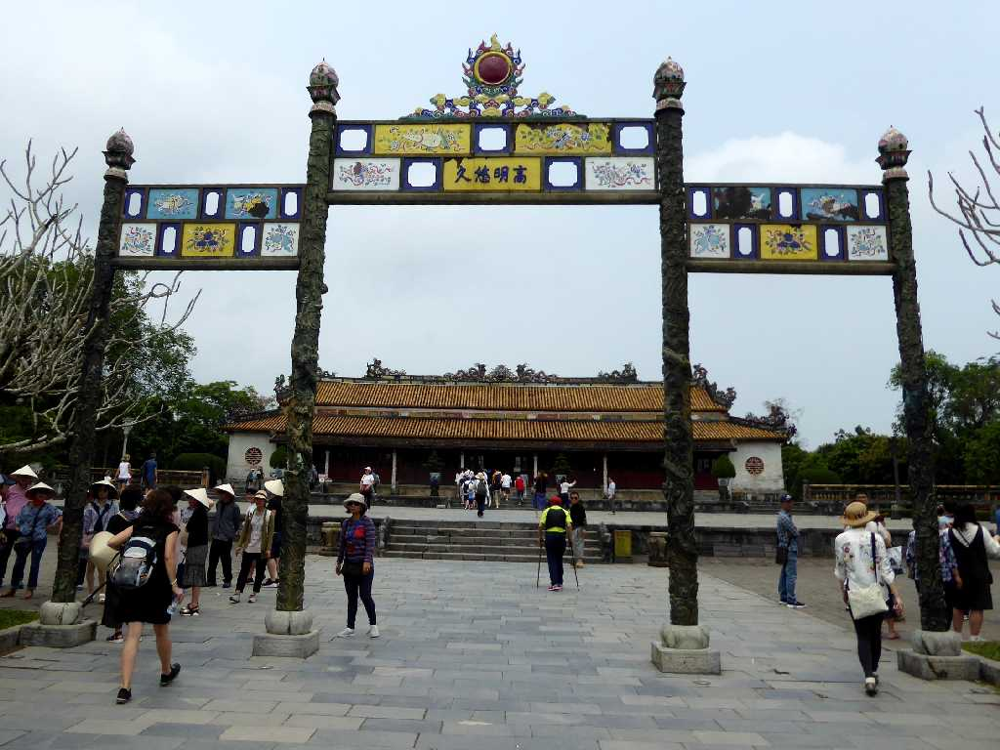
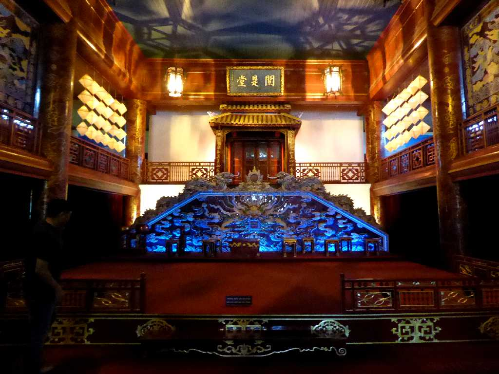
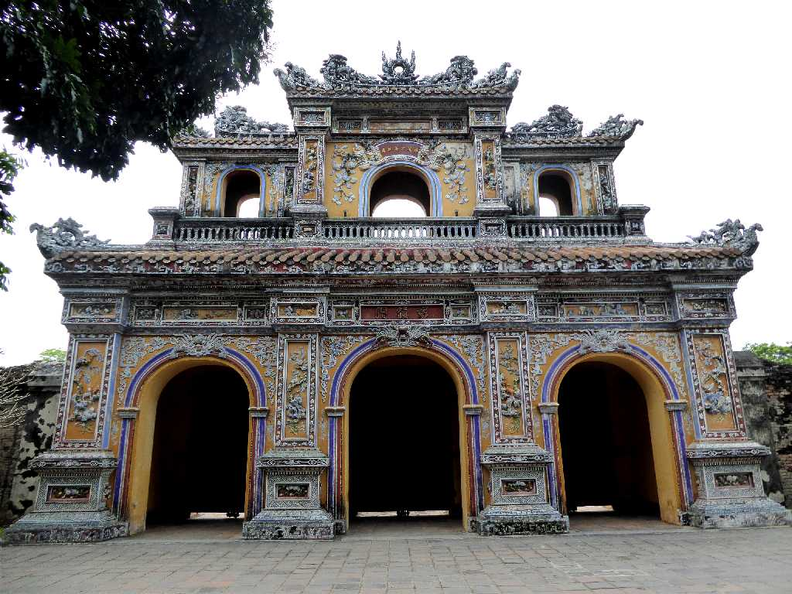
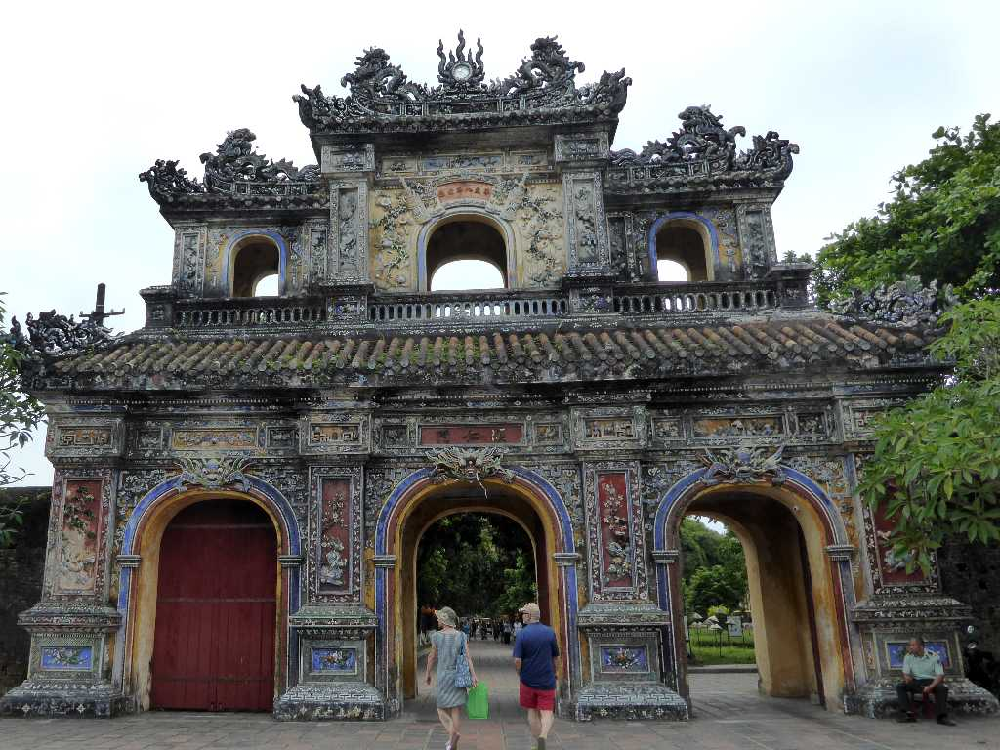
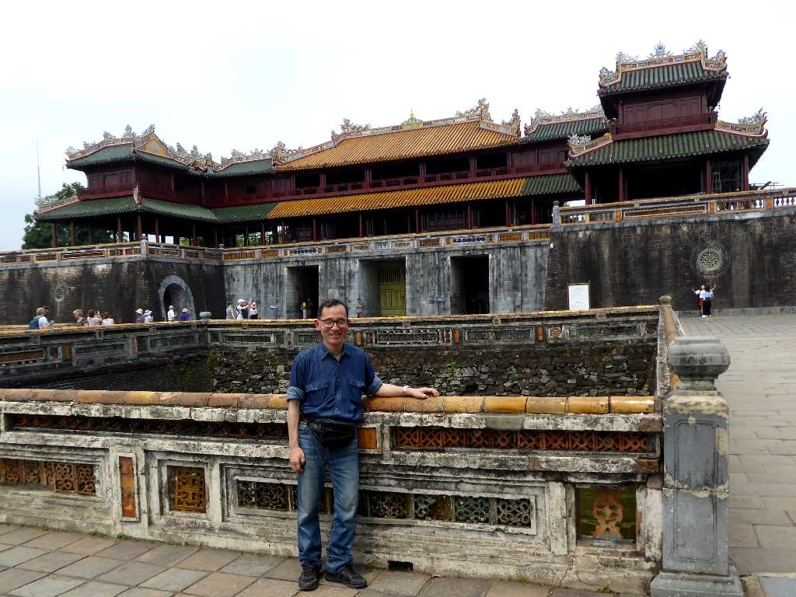

Cung điện Hoàng gia Huế (Hue Royal Place)
１８０２年から１９４５年まで１３代の皇帝が君臨した阮王朝の都として栄えたフエの阮朝王宮
Main Palace Cung điện Hoàng gia Huế
謁見の間がある太和殿

Theater Cung điện Hoàng gia Huế
宮殿内劇場の閲是堂

West Gate Cung điện Hoàng gia Huế
装飾が美しい西門の彰徳門

East Gate Cung điện Hoàng gia Huế
装飾が美しい東門の顕仁門

March 29 2018 Main Gate Cung điện Hoàng gia Huế
午門と云われる王宮の正門は正午になると太陽が午門の真上に来るように設計されている